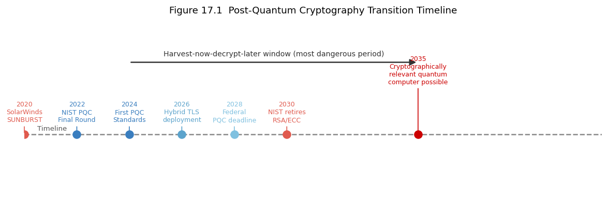

17. Chapter 17: Emerging Threats and Future Challenges#
“The threat landscape does not wait for defenders to catch up.” security research community
17.1. Learning Objectives#
After completing this chapter, you will be able to:
Explain the post-quantum cryptography threat and the status of NIST PQC standardisation.
Describe AI-enabled attacks and AI-assisted defences.
Explain supply chain attacks and their significance.
Describe cloud-native security challenges and the shared responsibility model.
Explain threats to and from the Internet of Things.
Describe zero-day markets and responsible disclosure.
Discuss cyber-physical systems risks and the convergence of IT and OT.
Evaluate the impact of emerging technologies on the security threat landscape.
17.2. Key Terms#
Post-quantum cryptography (PQC): cryptographic algorithms resistant to quantum computers.
Shor’s algorithm: quantum algorithm that breaks RSA and ECC by factoring large numbers efficiently.
NIST PQC: NIST’s process for standardising post-quantum algorithms.
Supply chain attack: compromising a target by attacking a trusted vendor, library, or update mechanism.
AI/ML in security: using machine learning for both attack and defence.
LLM: Large Language Model; AI capable of generating text including code, emails, and scripts.
Deepfake: AI-generated synthetic audio, video, or image indistinguishable from real.
Zero-day: a vulnerability unknown to the vendor; no patch exists.
Exploit broker: organisations or individuals that buy and sell zero-day exploits.
Shared responsibility model: cloud provider secures the infrastructure; customer secures their data and applications.
IoT: Internet of Things; internet-connected embedded devices.
SBOM: Software Bill of Materials; a list of software components in an application.
17.3. Post-Quantum Cryptography#
17.3.1. The Quantum Threat to Current Cryptography#
Classical computers cannot efficiently solve the problems underlying RSA (integer factorisation) and ECC (elliptic curve discrete logarithm). Shor’s algorithm, executable on a sufficiently large, fault-tolerant quantum computer, solves both in polynomial time. A quantum computer of sufficient scale would break all RSA and ECC keys, compromising TLS certificates, SSH keys, VPN infrastructure, code-signing certificates, and any system using asymmetric cryptography.
17.3.2. NIST PQC Standardisation#
NIST launched a post-quantum cryptography standardisation process in 2016 and in 2024 published the first three PQC standards:
ML-KEM (CRYSTALS-Kyber): a key encapsulation mechanism based on module lattice problems.
ML-DSA (CRYSTALS-Dilithium): a digital signature algorithm.
SLH-DSA (SPHINCS+): a hash-based signature algorithm requiring no lattice assumptions.
A fourth standard, FN-DSA (FALCON), is also being finalised. These algorithms are designed to resist both classical and quantum attacks and are intended to replace RSA and ECDSA over the next decade.
17.3.2.1. Harvest Now, Decrypt Later#
Adversaries are likely already collecting encrypted traffic today that they cannot decrypt with current computers, planning to decrypt it once a quantum computer is available. Long-lived secrets (state secrets, health data, legal records) encrypted today with RSA or ECC may be readable in 10-15 years. This drives urgency for PQC migration even before quantum computers are operational at scale.
17.4. AI-Enabled Attacks and Defences#
17.4.1. Offensive AI#
Large Language Models (LLMs) lower the barrier for several attack categories:
Phishing at scale: LLMs generate personalised, grammatically perfect spear-phishing emails from LinkedIn data, eliminating the spelling errors that historically flagged phishing.
Social engineering scripts: LLMs draft convincing vishing scripts tailored to specific targets.
Code generation: LLMs assist in writing exploit code, fuzzing harnesses, and malware variants.
Deepfake fraud: AI-generated audio and video impersonate executives for BEC and vishing; documented cases of deepfake CEO calls authorising wire transfers have been reported.
17.4.2. Defensive AI#
Machine learning provides significant defensive capability:
Anomaly detection: ML models trained on normal behaviour detect deviations that signature-based tools miss.
Malware classification: neural networks classify malware families from PE features or opcode sequences with high accuracy.
Natural language threat intelligence: LLMs parse unstructured threat reports, extract IOCs, and map them to ATT&CK techniques faster than human analysts.
Automated triage: SOAR platforms use ML to prioritise alerts and enrich them with context.
17.5. Supply Chain Attacks#
17.5.1. Why Supply Chain Is a High-Value Target#
Every organisation trusts dozens to thousands of software dependencies: open-source libraries, commercial tools, cloud services, and managed service providers. Compromising a widely-used library or update mechanism provides access to every consumer simultaneously.
17.5.2. Notable Supply Chain Attack Patterns#
17.5.2.1. Build Pipeline Compromise#
The SolarWinds SUNBURST attack (2020) injected malicious code into the build pipeline, producing a signed, legitimate-looking software update that installed a backdoor in approximately 18,000 organisations. The attacker had access to victim environments for months before detection.
17.5.2.2. Dependency Confusion and Typosquatting#
Dependency confusion exploits the package manager resolution order: an attacker publishes a public package with the same name as an organisation’s internal package. The package manager may prefer the public version, executing the attacker’s code. Typosquatting registers packages with names similar to popular ones (numpy vs numpyy) hoping developers mistype the dependency.
17.5.3. SBOM and Dependency Management#
A Software Bill of Materials (SBOM) enumerates every software component and its version in an application. SBOM enables rapid assessment when a new vulnerability is published: which of our applications include the vulnerable component? CISA and the White House Executive Order on Cybersecurity (2021) mandate SBOM for software sold to the US federal government.
17.6. Cloud Security#
17.6.2. Cloud-Native Threats#
Cloud environments introduce new attack surfaces: serverless function injection, container escape from misconfigured Kubernetes clusters, abuse of cloud metadata services (IMDS) via SSRF, and lateral movement via IAM role chaining.
17.7. Internet of Things Security#
17.7.1. The IoT Attack Surface#
IoT devices (smart cameras, thermostats, medical devices, industrial sensors) present a uniquely difficult security challenge: they often run embedded Linux or RTOS with no patch mechanism, use default credentials that are rarely changed, lack display or keyboard interfaces for security configuration, and remain deployed for 10-20 years.
17.7.2. Consequences#
Compromised IP cameras have been used for botnet DDoS (Mirai botnet, 2016: 600 Gbps peak, targeting Dyn DNS and disrupting major internet services). Compromised medical devices could alter drug dosages or monitoring alarms. Compromised building systems could affect physical security or HVAC of data centres. The consequence spectrum for IoT compromise extends from nuisance to physical harm.
17.8. Zero-Day Markets and Disclosure#
17.8.1. The Zero-Day Economy#
Zero-day vulnerabilities in widely-used software are bought and sold for substantial sums. Government agencies and private brokers pay millions of dollars for reliable, weaponisable zero-days in iOS, Android, Windows, and popular browsers. This creates economic disincentive for responsible disclosure and means some vulnerabilities are exploited as intelligence tools for years before becoming public knowledge.
17.8.2. Responsible Disclosure and Bug Bounties#
Bug bounty programmes (HackerOne, Bugcrowd, and vendor-operated programmes) pay researchers for vulnerabilities reported responsibly. Google’s Project Zero enforces a 90-day disclosure deadline: if a vendor does not patch within 90 days, the vulnerability is published regardless. This creates patch pressure while giving vendors a reasonable remediation window.
17.9. Why This Matters#
The threat landscape is not static. An organisation that correctly implements the controls from earlier chapters of this book is protected against the threat landscape of today. The controls needed for tomorrow (PQC migration, AI-resistant phishing training, SBOM management, cloud security posture management) must be planned now. Security programmes that monitor emerging threats and adapt continuously are more resilient than those that deploy controls once and consider the job done.
17.10. News in Focus#
NIST’s publication of the first three post-quantum cryptographic standards in 2024 began the largest coordinated cryptographic migration in internet history. Major TLS implementations and cloud providers began deploying hybrid classical/PQC key exchange (combining ECDHE with ML-KEM) to provide protection even before the full transition. Organisations with long-lived sensitive data began cataloguing their cryptographic dependencies in preparation for migration. This transition will take a decade and requires systematic cryptographic inventory and testing.
# Chapter 17 -- Quantum threat timeline and PQC algorithm comparison
import matplotlib
matplotlib.use('Agg')
import matplotlib.pyplot as plt
import matplotlib.patches as mpatches
from io import BytesIO
from IPython.display import display, Image
# ── PQC algorithm comparison table ───────────────────────────────────────────
print("=== NIST PQC Standardised Algorithms (2024) ===\n")
algorithms = [
dict(name="ML-KEM (Kyber)", use="Key Encapsulation",
basis="Module Lattice", pub_size="800-1568 B", perf="Fast"),
dict(name="ML-DSA (Dilithium)", use="Digital Signature",
basis="Module Lattice", pub_size="1312-2592 B",perf="Fast"),
dict(name="SLH-DSA (SPHINCS+)", use="Digital Signature",
basis="Hash functions", pub_size="32-64 B", perf="Slower"),
dict(name="FN-DSA (FALCON)", use="Digital Signature",
basis="NTRU Lattice", pub_size="897-1793 B", perf="Fast"),
dict(name="RSA-2048 (classical)", use="Key Exchange/Sig",
basis="Integer factoring", pub_size="256 B", perf="Moderate"),
dict(name="ECDSA P-256 (classical)",use="Digital Signature",
basis="Elliptic curve DLP", pub_size="64 B", perf="Fast"),
]
print(f" {'Algorithm':<25} {'Use':<22} {'Hard Problem':<22} {'Pub Key':<14} {'Speed'}")
print(" " + "-"*95)
for a in algorithms:
quantum = "QUANTUM SAFE" if "classical" not in a["name"] else "VULNERABLE TO SHOR"
print(f" {a['name']:<25} {a['use']:<22} {a['basis']:<22} {a['pub_size']:<14} {a['perf']}"
+ f" [{quantum}]")
# ── Quantum threat timeline visualisation ─────────────────────────────────────
fig, ax = plt.subplots(figsize=(12, 4))
ax.axis("off"); ax.set_xlim(2020, 2042); ax.set_ylim(-1, 3.5)
events = [
(2020, 0.3, "SolarWinds\nSUNBURST", "#e05a4e"),
(2022, 0.3, "NIST PQC\nFinal Round", "#3a7ebf"),
(2024, 0.3, "First PQC\nStandards", "#3a7ebf"),
(2026, 0.3, "Hybrid TLS\ndeployment", "#5ba3cc"),
(2028, 0.3, "Federal\nPQC deadline", "#80c1e0"),
(2030, 0.3, "NIST retires\nRSA/ECC", "#e05a4e"),
(2035, 1.2, "Cryptographically\nrelevant quantum\ncomputer possible", "#c00"),
]
ax.axhline(0.8, xmin=0, xmax=1, color="#888", lw=1.5, ls="--")
ax.text(2020.5, 0.9, "Timeline", fontsize=8, color="#555")
for year, y_off, label, color in events:
ax.scatter([year], [0.8], color=color, s=80, zorder=5)
ax.annotate(f"{year}\n{label}", xy=(year, 0.8),
xytext=(year, 0.8 + y_off),
ha="center", fontsize=7.5,
arrowprops=dict(arrowstyle="-", color=color, lw=1),
color=color)
ax.add_patch(mpatches.FancyArrowPatch((2024, 2.5), (2035, 2.5),
arrowstyle="-|>", color="#333", lw=1.5, mutation_scale=15))
ax.text(2029.5, 2.65, "Harvest-now-decrypt-later window (most dangerous period)",
ha="center", fontsize=8.5, color="#333")
ax.set_title("Figure 17.1 Post-Quantum Cryptography Transition Timeline", fontsize=11, pad=8)
ax.set_xlabel("Year", fontsize=9)
ax.set_xticks(range(2020, 2042, 2))
_buf = BytesIO()
plt.savefig(_buf, format="png", dpi=120, bbox_inches="tight")
plt.close(); _buf.seek(0)
display(Image(data=_buf.read()))
print("Figure 17.1 rendered.")
=== NIST PQC Standardised Algorithms (2024) ===
Algorithm Use Hard Problem Pub Key Speed
-----------------------------------------------------------------------------------------------
ML-KEM (Kyber) Key Encapsulation Module Lattice 800-1568 B Fast [QUANTUM SAFE]
ML-DSA (Dilithium) Digital Signature Module Lattice 1312-2592 B Fast [QUANTUM SAFE]
SLH-DSA (SPHINCS+) Digital Signature Hash functions 32-64 B Slower [QUANTUM SAFE]
FN-DSA (FALCON) Digital Signature NTRU Lattice 897-1793 B Fast [QUANTUM SAFE]
RSA-2048 (classical) Key Exchange/Sig Integer factoring 256 B Moderate [VULNERABLE TO SHOR]
ECDSA P-256 (classical) Digital Signature Elliptic curve DLP 64 B Fast [VULNERABLE TO SHOR]

Figure 17.1 rendered.
17.11. Review Questions (MCQ)#
Q1. Shor’s algorithm threatens RSA and ECC by: A. Brute-forcing the key space B. Efficiently solving integer factorisation and discrete logarithm on a quantum computer C. Exploiting TLS implementation bugs D. Requiring the private key to be transmitted
Q2. The first NIST PQC standard for key encapsulation is: A. FALCON B. SPHINCS+ C. ML-KEM (Kyber) D. ML-DSA (Dilithium)
Q3. “Harvest now, decrypt later” describes: A. Storing data until quantum computers can break current encryption B. Collecting credentials for password spraying C. Archiving logs for forensic use D. Caching TLS sessions
Q4. The SolarWinds attack is classified as a supply chain attack because: A. It targeted the solar energy sector B. Malicious code was injected into a trusted software update distributed to thousands of organisations C. It used a zero-day in Windows D. It targeted cloud infrastructure
Q5. An SBOM primarily helps an organisation: A. Audit IAM permissions B. Rapidly identify which products contain a newly disclosed vulnerable component C. Generate YARA rules D. Perform threat modelling
Q6. In the cloud shared responsibility model, the customer is always responsible for: A. Physical server security B. Hypervisor patches C. Their data, identity management, and application security D. Network hardware failures
Q7. The Mirai botnet primarily compromised: A. Windows servers B. IoT devices with default credentials C. Cloud VMs D. SCADA systems
Q8. LLMs improve spear phishing effectiveness primarily by: A. Breaking TLS encryption B. Generating personalised, grammatically correct phishing content at scale C. Automating network scanning D. Cracking passwords
Q9. Google Project Zero’s 90-day disclosure policy is designed to: A. Give attackers time to develop exploits B. Allow indefinite vendor delay C. Create patch pressure while giving vendors a reasonable remediation window D. Prevent all public disclosure
Q10. Hybrid classical/PQC key exchange (e.g., ECDHE + ML-KEM) is deployed to: A. Improve TLS performance B. Provide protection during migration even if one algorithm is later broken C. Eliminate certificate authorities D. Reduce key sizes
Answers: Q1 B, Q2 C, Q3 A, Q4 B, Q5 B, Q6 C, Q7 B, Q8 B, Q9 C, Q10 B.
17.12. Lab Assignment#
Part A – Cryptographic inventory: Audit a web service you control (your own server, a lab VM, or a cloud instance). Use nmap --script ssl-enum-ciphers -p 443 to list the TLS cipher suites offered. Identify: which key exchange algorithm is used, whether it is forward-secret, and whether it uses a quantum-vulnerable algorithm.
Part B – PQC algorithm comparison: Using the NIST PQC documentation, compare ML-KEM-768 and ML-KEM-1024 on four dimensions: public key size, ciphertext size, security level (NIST level), and performance. Explain the trade-off between ML-KEM-768 and ML-KEM-1024 for TLS deployment.
Part C – Supply chain risk assessment: For a fictional organisation that uses 20 Python packages in a web application, describe the process for generating an SBOM using pip-audit or cyclonedx-py. Explain how you would use the SBOM to respond if a critical CVE were disclosed in one of those packages.
Part D – AI threat model: Draft a one-page threat model for AI-enabled attacks on a 500-person financial services firm. Include: which roles are most vulnerable to AI-enhanced phishing/vishing, which defences are most effective (phishing-resistant MFA, deepfake detection, voice authentication review), and one emerging AI threat the firm should monitor.